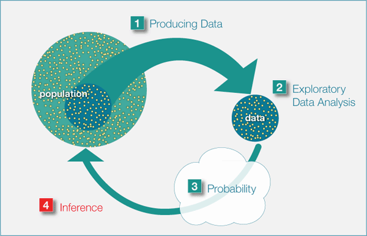
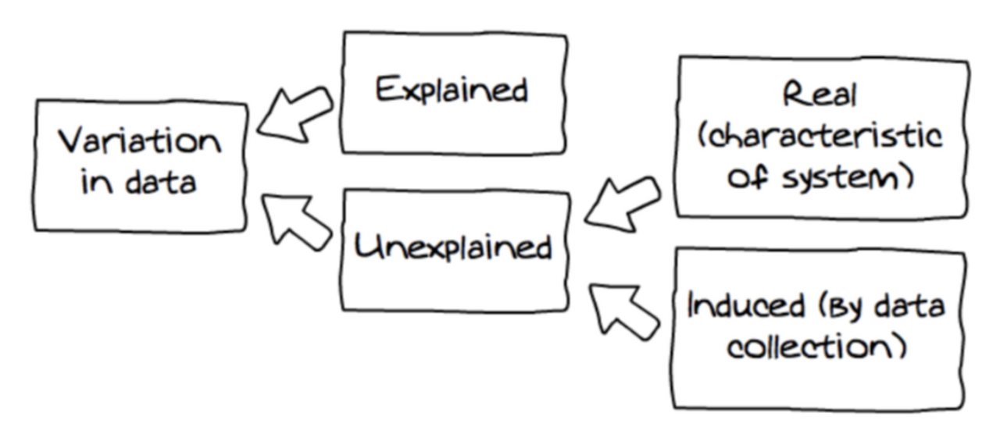

04-Probablity Distributions and Visualization Notes
Princeton University
Outline
Probability - what is it?
Random processes and variables
Probability distributions
DGP
ggplotprimerVisualizing variance
Probability warm-up
What is probability of drawing the ace of spades from a fair deck of cards?
What is the probability of drawing an ace of any suit?
You are going to roll some dice twice. What is the probability you roll doubles?
What is the chance that a live specimen of the New Jersey Devil will be found?
Who is more likely to be a victim of a street robbery, a young man or an old woman?
Frequentist interpretation of probability
- Classical statistical inference is based off this interpretation
The frequentist approach treats probabilities as relative frequencies
- If we say that the probability of rolling a 5 on a fair die is 1/6, we mean that, if the die were rolled an infinite number of times, 1/6 of all rolls would be a 5
What probability is not
What is probability theory?
Probability is the study of random processes
Probability is used to characterize uncertainty/randomness

Random processes: intuition
- Let’s flip a fair coin
Can you tell me what the outcome will be?
If we were to flip a fair coin many many times, would you be able to tell the proportion of times that we would obtain heads?
. . .
- If answer to first question is “NO†AND Answer to second question is “YES”
- You are dealing with a random process
Random processes
- Random processes are mechanisms that produce outcomes… from a world/set of possible outcomes… with some degree of uncertainty but with regularity
. . .
- Random assignment in experiments
. . .
- Random dram of a sample of n individuals from a population of N individuals
. . .
- Rolling a die
What is a random variable?
A variable that depends on a random process
Think about the following random phenomenon: “randomly selecting 2 students in this class room”
Sample space?
One possible outcome: \(\omega = \{\mathrm{Ari, \: Alex}\}\)
Another possible outcome: \(\omega = \{\mathrm{Kennedy, \: Brooke}\}\)
What is a random variable?
- Can this be considered a random variable?
. . .
No. Random variables are always numeric
We operate on random variables using math
Illustration
Random variables are mappings from events to numbers
Formally, a random variable is defined as a function that maps the sample space \(\Omega\) of a random generative process into the real line (or into real numbers)

Probability distribution functions
Two types of random variables
Discrete
Continuous
The distribution of a random variable \(X\) describes the likelihood of the values that \(X\) can take
Discrete random variables: definition
Discrete random variables are defined on a range that is a countable set
i.e., they can only take on a finite or countably infinite number of different values

Probability mass function (PMF)
Let \(X\) be a discrete random variable
The probability mass function (PMF) of \(X\) summarizes the probability of each outcome \(x\)
PMF: function \(p\) given by \[P(X = x)\]
\(X\) = RV
\(x\) = Outcome
Example: Dessert tonight
Imagine that you started a strict diet a few days ago. You are at a dinner party at your friend’s who made your favorite dessert. You are very tempted and make the decision to flip a coin three times. The number of times that the flip coin returns tail determines the number of bites of the dessert you will have. Before you start flipping the coin, you want to learn more about your chances of not having dessert tonight. To do that, you decide to look at the possible outcomes. You let 𑋠be the number of times a series of three coin flips returns tails (T). The support of 𑋠is {0, 1, 2, 3}.
Dessert tonight
PMF: Dessert tonight
Cumulative distribution function (CDF): definition
The CDF of a random variable is the function \(F\) such that
- \(F(x) = P(X \leq x)\)
PMF tells us probability of each possible outcome
CDF tells us the probability that an outcome below a specific value occurs
Sums to 1
Continuous random variables: Definition
- A continuous random variable is a variable that can take on an infinite number of values within a given range or interval
Probability Density Function (PDF): Definition
- PDF is continuous version of PMF
- The PDF of a random continuous variable is the function \(F\) such that
\[P(a \leq X \leq b) = \int_{a}^{b} f(x) \, dx\]
- PDF tells us the probability of range of outcomes
- What is probability of observing IQ between 100 and 125?

CDF
\(F(x) = P(X \leq x)\)
- \(IQ \leq 100\)

Summarizing random variables
PMFs, PDFs, CDFs are very useful tools to summarize information from rvs.
Many other ways to summarize random variables!
- e.g., mean, median, standard deviation, etc.
Our goal as statisticians

Link probability distributions to the data generating process (DGP)
The DGP represents the “real-world†process of how data comes about
Probability distributions are mathematical models used to model and understand the DGP
DGP
Bottom-up: This approach begins with the observed data. By examining the data distribution, one might make educated guesses or inferences about the underlying processes that produced it
Top-down: This approach relies on pre-existing knowledge or theories about the system or phenomenon in question to inform our understanding of the DGP

Bootstrapping
Sampling with replacement
A computer based method for deriving the probability distribution for any random variable
How to do it
- Run your analysis a bunch of times with a slightly different set of observations each time
- Dice roll
Once we have an idea about the DGP we can simulate data to see if it conforms to expectations.
Sampling helps us build up our intuitions about probability distributions
The book talks about dice rolls.
What are some others?
Bootstrapping
Sources of Variance
- There is uncertainty associated with the DGP

Randomness
Shuffling (permutation tests)
@rind1996

Visualizing variance

ggplot2is tidyverse’s data visualization package (plotninein Python uses similar syntax)The gg in
ggplot2stands for Grammar of GraphicsIt is inspired by the book Grammar of Graphics by Leland Wilkinson
A grammar of graphics is a tool that enables us to concisely describe the components of a graphic
ggplot2

ggplot2
Let’s start with a blank canvas
ggplot2 - Data

ggplot2 - Layers
Let’s add a geom
geom_pointadds a dot for each raw data point
ggplot2 - Layers
Let’s add another geom
geom_smoothplots a smoothed line for the data
ggplot2 Layers
- Maybe a linear line
ggplot2 - Layers
- It might be nice to see the raw data WITH the line. We can combine geoms!
ggplot2 - Size
- Points are a bit small. Let’s make them bigger!
ggplot2 - Color
- How could we add information about different types of penguins?
ggplot2- Axes
Let’s clean up our plot
- Add clearer axis labels
ggplot2 - Title
Let’s clean up our plot
Add title
ggplot2 - Themes
ggplot2 - Color themes


ggplot2 - Themes

Visualizing Variance and Relationships
Disclaimer
- More information is always better!
- Avoid visualizing single numbers when you have a whole distribution of numbers

Histograms
Histograms
Put data into equally spaced buckets (or bins), plot how many rows are in each bucket
ggdist
Put data into equally spaced buckets (or bins), plot how many rows are in each bucket
Histograms: Bin width
Range of values in each bar or dot
Histogram tips
Add a border to the bars
for readabilitygeom_histogram(..., color = "green")
Histogram tips
- Set the boundary
Density plots
Use calculus to find the probability of each x value
Density plots: Kernels and bandwidths
Different options for calculus change the plot shape
Kernels - Smooth data points
bandwidth - how wide
Box plots
Box plots
Show specific distributional numbers
Five number summary

Categorical Variables
Bar plots
Bar plots
Exploring quantitative variables
Scatter plots

Categorical x Continuous
Exploring multiple groups
Visualize the distribution of a
single variable across groupsAdd a
fillaesthetic or use faceting!
Multiple histograms
- This looks bad and is hard to read
Multiple histograms
Pyramid histograms
Multiple densities: Transparency
Multiple densities: Ridge plots
Multiple box plots
- Boxplots
Violin plots
Density plot rotated 90 degrees and mirrored
Are violin plots bad?
Half violin plots + Box
Strip plots
Strip plots
Add summary stats
Raincloud plots
Half violin plots + box + raw points

Raincloud Plots
Multiple Geoms
- Multiple Geoms
Categorical vs. Categorical
Stacked bar plots
Combining plots
patchwork

cowplot